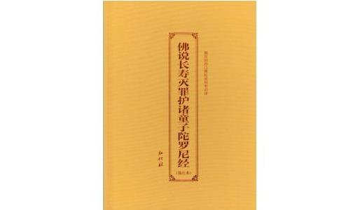

我于1988年大学毕业后工作，第二年与大学时相恋的女同学结婚。婚后不久，发现妻子意外地怀孕，由于双方都忙于工作，所以毫不犹豫地陪妻做了人工流产。妻子做了人流手术后，感到身体状况不如以前，比较容易感冒。
一年多后，没料到妻子再次意外怀孕。她当时正准备出国进修，而我正在复习准备考研究生。妻子是个柔顺贤良的人，想放弃出国把孩子生下来，而我却对她说出国机会难得，孩子以后随时还可以再怀再生。妻子也觉得我说的话有道理，于是再次去医院做了人工流产。
这次手术后妻子的身体明显衰弱，还患了妇科病，不久就要去医院看病服药，而且工作和做事时总是不专心，爱走神。一次，竟然粗心大意地签发错了一份报告（妻子过去一向是聪慧谨慎细心的人），给客户造成了较大的损失，受到了单位的处罚，并取消了其出国进修的资格。
经过这次事情后，妻子情绪低落，更奇怪的是她性情开始变得有些怪异，有时会突然无缘无故地责骂我、猜疑我，有时又数日不理我，不和我讲一句话，跟原来判若两人。
我多次耐心地与她谈心开导她，她一时也能接受，可是过不了几天又失控地故态复发。不久后，我也开始变得性情急躁甚至粗暴，经常跟妻吵闹或冷战，夫妻关系出现破裂，我已无心复习考研，而她对我的责罚开始升级——提出离婚！事已至此，我也无话可说，五年的感情，就这么轻易地断绝。溯根查源，都是堕胎惹的祸。要是妻子把孩子生下来，一家三口其乐融融，也一样可以享受幸福人生。都是一时的名利薰心。现在与孩子的缘没了，也断了与妻的缘，家破活受罪，都是自作自受。
终于离婚了，本以为可以清净下来好好地读书复习，不料我的身体出现了毛病：心悸心慌、腰背坠痛、易疲劳、嗜睡、做恶梦、记忆力下降、精神焕散、性情暴躁。到医院体检，也查不出是什么疾病，只说是神经官能症、心律失常，治疗三个疗程，但收效甚微；于是改看中医，诊断为肾阴虚、心肾不交、阴阳失调，服中药数月仍未好转；后来去做理疗、针灸、练气功，均无效果。
同时，工作中数次出现差错和失误，被领导和同事认为我是个粗心和责任心不强的人。此时，我的身体和事业都跌入了人生的低谷，于是怨天尤人，得过且过，再无上进心。
1991年开始，家人和好友为我介绍对象，其中一位未婚姑娘的各方面条件都很好，我也十分满意，她本人也很乐意接受我。来往几个月后，她发现我经常会对她莫名其妙发无名之火，无端地猜疑她，她受不了，并说我是变态之人，遂拂袖而去。这时，我才意识到自己已蜕变成一个有严重问题的人。后来，又处了几个自认为满意的对象，也没谈成，都是莫名其妙地与我分手。这中间似乎有一个无形的“第三者”在搅局，坏我的好事。我彻底的失望了，再也不去相亲了。
1994年我有幸接触了佛法，才知道我所遭遇的痛苦都是造作无明恶业所致的因果报应，于是立志通过修习佛法来改变现状。十多年来，朝名山、赴西藏、拜师参学、念经忏悔、印经放生等，不断积功修福，感觉到身体和事业都有了很大的改善，但是腰背坠痛、性情急躁的状况仍旧，心悸心慌每个月都有发生。自己也觉得好像还有什么业障没有彻底解决，但一直找不到原因，自忖可能是前世的恶业没消除所致，于是安心忍受，作逆增上缘想。
2004年，一位著名的精于命理卜算的师兄推断我在2006年肯定会升职。果然，是年年初上级派人来考核我的工作和业绩，在三个考核对象中我的评分最高。本以为此次晋职非我莫属，没想到最后公布的晋职者是另一人（算命是算先天所有，堕胎为后天造作损福，故不准）。我表面虽然坦然，但心中却忐忑不平，淡淡的失落和迷惑再度生起，到底是什么业障因果在阻碍我？
承蒙佛菩萨和护法善神的加被，我终于有幸地看到了《佛说长寿灭罪护诸童子陀罗尼经》。阅完整部经，回想起过去所经历的一切，我才恍然大悟——原来是犯了杀胎的极恶重罪！天哪，学佛十多年竟不知道堕胎之罪如此之大！这竟然是五逆重罪，而且还忏悔难灭！难怪我多年努力地修福积功也未能彻底地消除罪障。
好在三界大导师释迦牟尼佛为我等开演了这部慈悲广大威力无穷的殊胜灭罪经，否则永堕阿鼻，万劫不复！这时，我忽然想起了前妻。她的情况怎么样？是不是也像我一样遭受了苦果恶报？通过多方打探，了解到她的遭遇比我更苦。她与我离婚后外嫁出国，丈夫是外国人，为他生下了两个孩子，在一个孩子长到1岁、另一个3岁的时候，她丈夫竟然狠心地抛弃她们母子三人不辞而别，至今音讯沓然，不知去向。
她一人在国外拖儿带女地吃救济金，生活极为艰难，其心中的苦痛更是可想而知。我为她的悲惨境遇暗自泣泪叹息！同时也证明了因果报应的真实不虚：你绝弃胎孕之婴，也会让你感受被人离弃的报应。我多次谈对象被人嫌弃、前妻被人抛弃等等痛苦，都是亲身领受了堕胎的现世恶报。
可怕啊，可悲啊！奉劝有缘看到我这篇亲受堕胎恶报苦果文章的人，一定不要重蹈覆辙，一定不要自讨苦吃，自取灭亡！找到了业障的罪恶根源和解决办法后，我就有针对性地对所犯的对象深深地发露忏悔（同时也代前妻忏悔）解冤结，祈求被堕的有缘婴灵（其实是我们的孩子）原谅我们的无知和罪过，并发誓以后不再违犯，而且把念诵助印流通《佛说长寿灭罪经》的功德回向给我所堕下的两个孩子的灵识（即婴灵），同时也回向给法界被堕的一切婴灵，诚心哀请佛菩萨、天龙八部、金刚力士、护法善神等慈悲超拔我的孩子和这些婴灵能离苦得乐，往生净土！
此外，我还配合做放生、捐资助学、随喜建庙、施食、供养三宝等功德，并且都回向给婴灵。念诵《佛说长寿灭罪经》到三十多部时，我首先明显地感到困扰我十多年的腰背隐隐坠痛霍然消失，走起路来十分轻松轻快，仿佛又回到了刚毕业时的状态，我心中异常惊喜；念了五十多部经时，心慌心悸的现象一个月内没出现过，至今也没有再出现；念满两百部经时，我的性情开始不纠自正，不管发生什么事情，我的心情都比较平和，不再像以前那样容易被激惹和暴躁冲动，而且有忍耐心和柔和心。
这一改变连我的同事、同学及父母都觉得不可思议、难以理喻。但我心中很明白，是《佛说长寿灭罪经》的功德力开始起作用了，多年来附在我身上缠扰我的婴灵终于彻底地离开了我，我杀胎的重罪开始忏悔清净了！不久后的一天晚上，我梦见在桂林漓江上驶来了一个船队，头戴五佛冠、手持锡杖、身披袈裟的庄严的地藏菩萨站在船头，每条船上坐着两排共有二十多个统一着新装、精神抖擞的童子，好像菩萨是带着他们游览两江四湖。
我异常激动，深深感恩！我想我的两个孩子也在其中吧，要不然怎么会示梦予我呢。在此，我以至诚的深心感恩本师释迦牟尼佛，感恩观世音菩萨、地藏菩萨、文殊师利菩萨，感恩天龙八部、金刚力士、牢固地天等一切护法善神，感恩《佛说长寿灭罪护诸童子陀罗尼经》！
奉劝犯了堕胎杀业的男女，赶快向被堕的婴灵宝宝至心诚恳地求忏悔解冤结，并一定要发誓不再违犯；赶紧尽早地念诵助印流通宣扬《佛说长寿灭罪经》，并将功德回向超度仍处于幽冥界被堕的受苦婴灵，而自己也能尽快地脱离病苦违缘厄运等业障，可谓冥阳两利，人天欢喜。